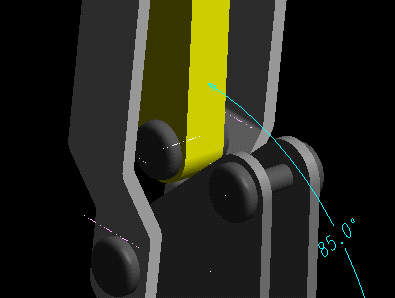
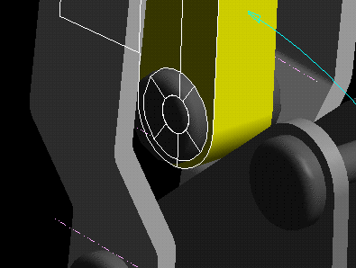

(Demonstrator 2)
| Next Step | Return to Table of Contents | Previous Step |

Add Link to the assembly
Select the U Bar, Select the Link, Done, Name the part Link
Hide the U Bar to make it easier to see the Pivot Pin and Link for constraining

Constrain the bottom hole of the Link to Pivot Pin 3, use the Filter to select center lines.


Constrain the side face of the Link to the end face of the Pivot pin

| Next Step | Return to Table of Contents | Previous Step |